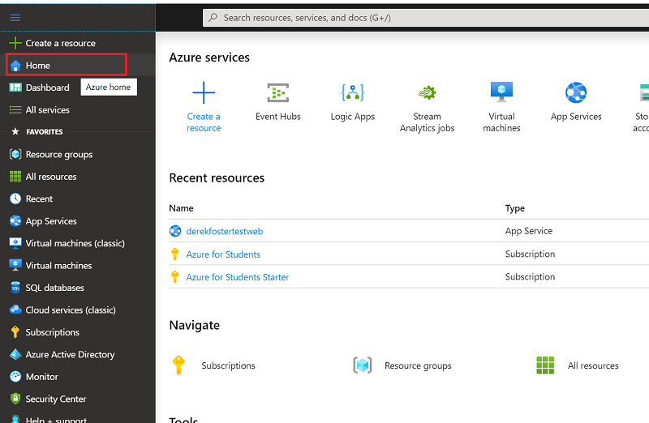
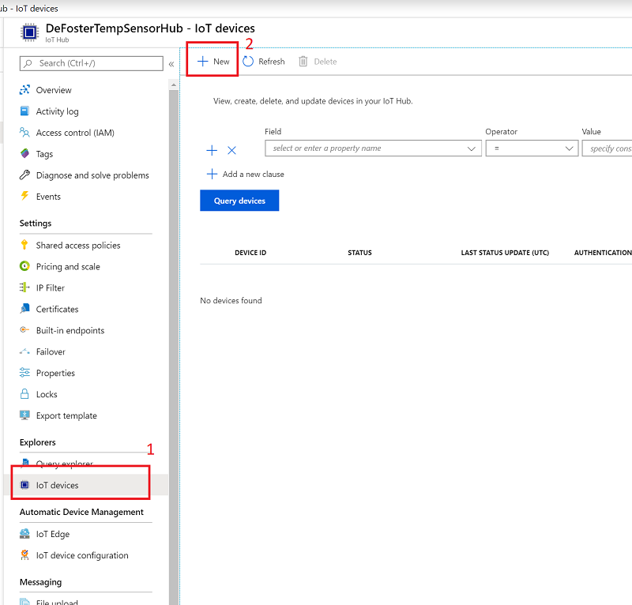
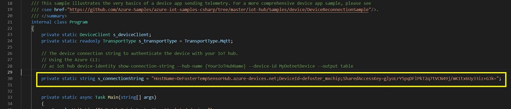

In last week's workshop you setup the simulated device console app and wrote some code to generate new sensors and values. This code was sent to Derek's Azure IoT hub where you viewed it being received by service console app that connected to hub and monitored it for events. Whenever a new sensor value was received by the IoT hub an event was triggered that the service app would read and display.
Part 1 - Create an Azure IoT Hub service on the cloud using your Azure for Students subscription
Part 2 - Connect the simulated device conole app to your IoT Hub and send sensor to it using the MQTT protocol
Part 3 - Independent task
You will need to use the simulated device and service app you installed and configured last week for use in this workshop. If you have not done workshop 2 yet or have the required apps ready to go then please return and complete workshop 2.
For this part of the workshop you will create a new resource on Azure in the form of an Iot Hub Service. The hub facilitates bi-directional device-to-cloud telemetry data for which you will use to securely send temperature data from the simulated device.
To get started login to your Azure account here using your university email credentials, remember you need an Azure for Students subscription, details are in workshop 1. When logged in click the Home button as shown below to ensure you are on the correct landing page:

Next, follow the simple steps below to create a new resource group. Resource groups provide a way to monitor, control access, provision and manage collections of services that are required to run an application. It is best practice to create a resource group for each application. For example you may have two very different applications you wish to host in the cloud that each have their own dependent services, as such each application should have its own resource group. Now create your resource group that will group your IoT application and service code for the module:
After a minute or two your new resource group will be created, if you do not see it after a few minutes then hit the refresh button:
Next, you will need to create a new IoT Hub service as part of the new resource group you just created, follow the steps below:
Your new Iot Hub service will now be created and deployed on the cloud under your specified resource group, this may take a few minutes to create so please wait.
When the IoT hub is created you will next need to provision a device for the hub. This provisioned device will have a unique connection string that you will use for connecting the simulated device console app to your hub, the connection string will be added to the simulated device app's code, replacing the connection string you used in workshop 2. Essentially this is the way IoT devices such as Amazon's Echo Dot are provisioned. They are programmed at the factory with a unique connection string that is used to call Amazon's servers when switced on. Extra details such as a users's Amazon account details can also be added to this connection string, so that if you purchase it on Amazon for yourself it can be pre-programmed to work with your Amazon account straight out of the box.
Lets add a new device to your hub by following the steps below:

Give the device your name followed by _simdevice for example for derek foster we use defoster_simdevice :
Your IoT device should now be provisioned in your hub, click on it as shown below and copy the device connection string to a text file, you should also email yourself it. Please do not share this connection string with anyone as it belongs to your Azure account.
You must copy the Primary Connection String above for your newly added device and copy it to a text file for storing securely.
OK - you now have an IoT hub and provisioned device that you can use for the remainder of the module for the workshop tasks, as well as for your assessment work if you choose to. You do not need to do this task again :)
Open the SimulatedDevice folder and then open the Program.cs file in VSC to view the currently coded connection string. Replace this connection string with the one you copied from your IoT hub earlier.

With the new connection string added to the simulated device code it is now time to run it send sensor data to your own hub:
Open an elevated terminal (see here for Windows). Navigate to the SimulatedDevice folder, this in the zip file you downloaded from workshop 2. The image below shows the path you need on a Windows machine, this path will be different on your own machine:

At the terminal (or command prompt) change the directory to the correct path on your machine:
cd C:\CMP9785M\code\workshop 2\SimulatedDevice
Now enter the command below to ensure the required packages are installed to run it:
dotnet restore
Your terminal window should look similar to below at this point:

Now its time to run the simulated device, enter the below command and it should run and start sending sensor data every 3 seconds to the specified Azure IoT Hub:
dotnet run

With the command prompt window selected, prese [CTRL] +c to stop the simulated device app running - you may need to do this twice!
Last week you used the service app to view the hub events that were triggered as you sent the simulated sensor data to it:
Instead of using the service app to view hub events you can use the Azure IoT Explorer tool. There are various versions available, including for Winows, Linux, and Mac, download it from here and install it.
You will need a different IoT Hub connection string for the explorer tool. You can get it by logging into the Azure portal here, and selecting your IoT hub. When you are on the IoT hub page follow the below screenshot to get the connection string.
With the Azure IoT Explorer installed,, click on the add connection button as below and follow the rest of the screenshots:
Paste in the connection string you just copied:
Select your virtual device that you created as part of your IoT hub:
Now you will start listening for telemetry data being sent to your hub:
Run your simulated device app again and the sensor data generated from it will be sent to your IoT hub and you can view the data as it arrives into the hub:
That is it! You have now set up an Azure IoT Hub and connected your simulated device app to it.
i) Modify your simulated device code (in program.cs) so that a JSON array payload is sent to your Iot Hub, currently the temperature and humidity are sent as part of a JSON object you will need to add the ability to send a json array of data
ii) The code current sends extra data as JSON for a temperature alert threshold, modify this code to send extra messages of your choosing that are part of the JSON payload, think of how you might use this for access control or filtering
iii) Monitor the number of events recieved by finding the correct location in the Azure portal for your IoT hub and ensure you can see the number of events increasing correctly by starting and stopping the SimulatedDevice application